Ride With GPS Links
Day 1 - Pittsfield to Great Barrington
Day 2 - Great Barrington to Springfield
Similar to my ride from Lee to Northampton, I had to take a bus from Boston to the Berkshires (this time to Pittsfield) via Springfield. This bus arrives relatively late in the day, around 2:30/3pm, so I had a very short amount of day-light hours to bike. This ride was in two parts again, first from Pittsfield to Great Barrington, where I would spend the night, and then the next day along Route 57 along the Connecticut Frontier.
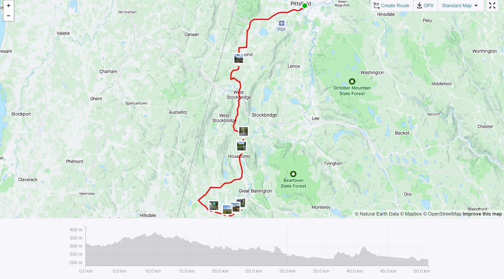 Strava Route Day 1 - Pittsfield to Great Barrington
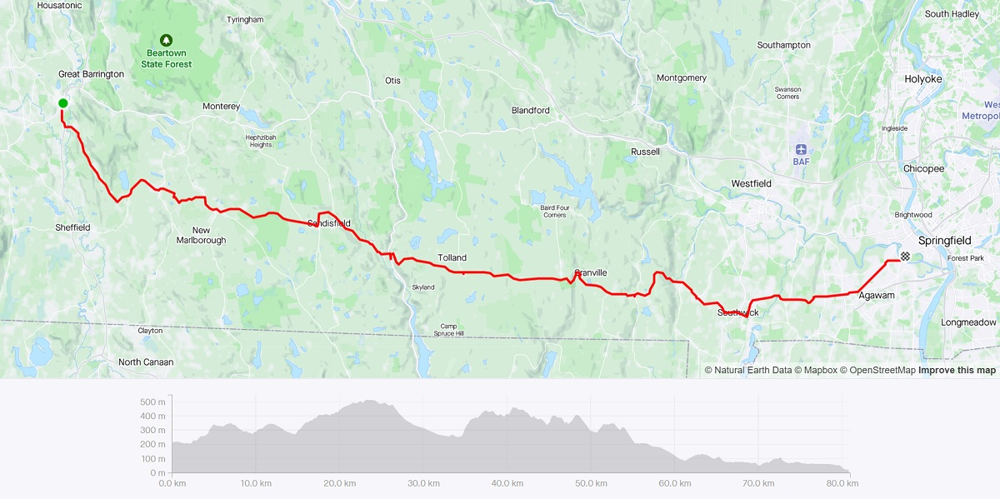 Strava Route Day 2 - Great Barrington to Springfield
My first day of riding was going to be relatively short, albeit hurried. It was a 32 mile ride, with very few inclines along mostly farmland. I started in Pittsfield, where the bus from Boston dropped me off at, and began riding south, with a relatively winding route to cover all the towns I had missed the last time I was in the Berkshires. This day’s portion was through mostly rolling farmlands. Living in Cambridge, you don’t really see these kind of landscapes, so it was very pleasant and relaxed. For most of the ride, I was the only person on the road. For me, these rides are very meditative. I do not like putting on any music, and prefer the silence and solitude that is hard to come by in the city.
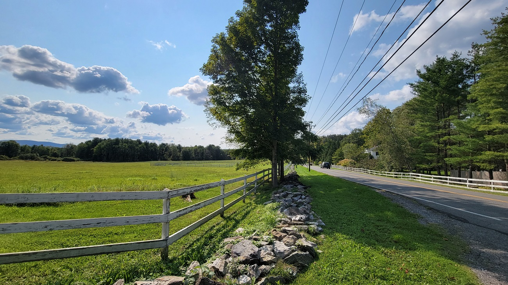 Farms and Fields in the Berkshire Valley - 1
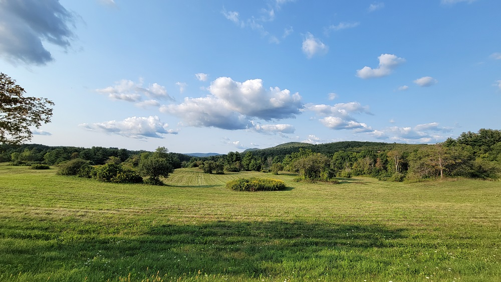 Farms and Fields in the Berkshire Valley - 2
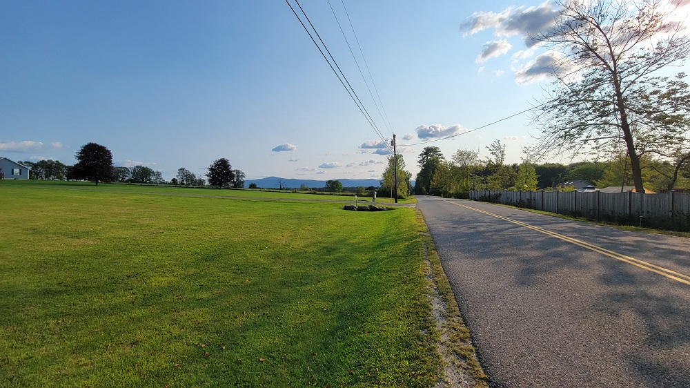 Farms and Fields in the Berkshire Valley - 3
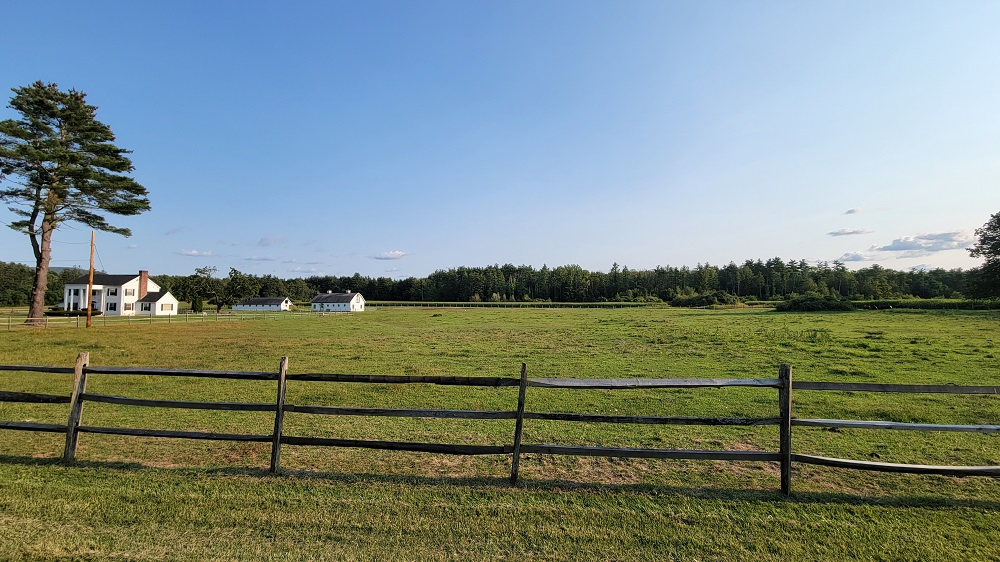 Farms and Fields in the Berkshire Valley - 4
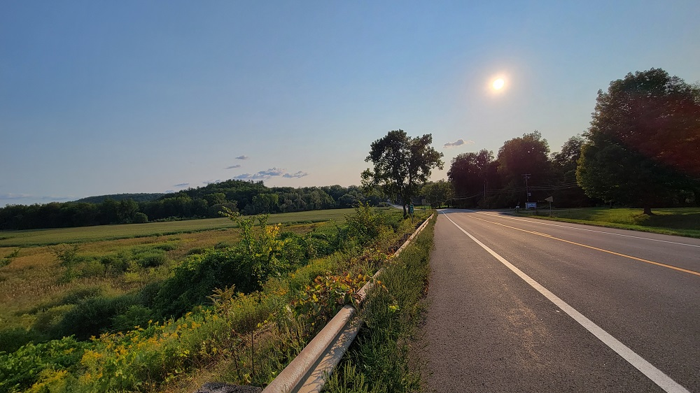 Farms and Fields in the Berkshire Valley - 5
I got to Great Barrington, not too badly out of breath. The next day’s ride was going to be longer, and steeper, so it was a good warm-up day today. I went into town, and had a nice cocktail at the Mooncloud Bar - a really fancy place with really fancy cocktails, in a really fancy town, in a really fancy state.
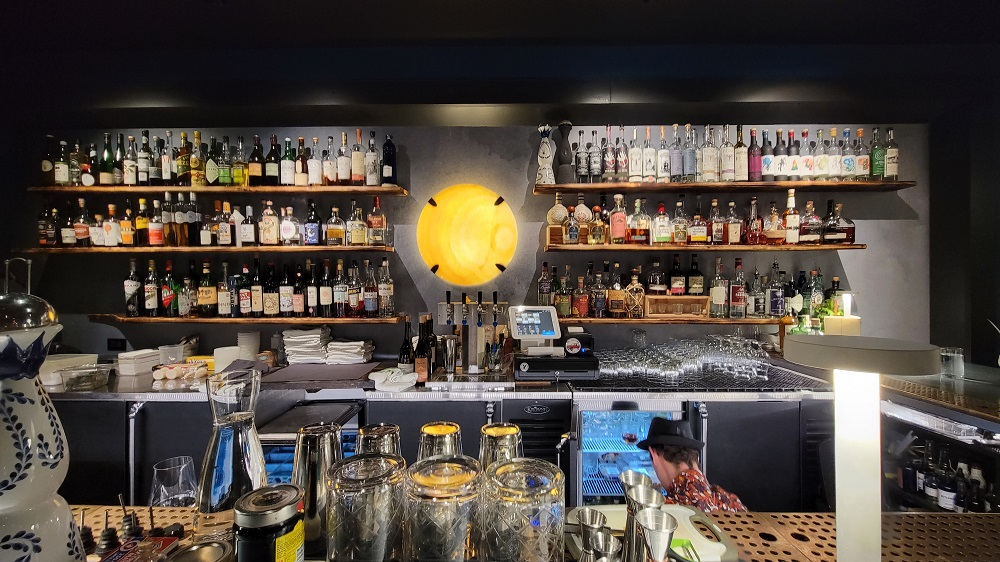 A really fancy cocktail, in a really fancy bar, in a really fancy town, in a really fancy state
While today’s ride was the longer of the two, it was extremely gruelling with multiple steep climbs. There was one point on Route 57 just after New Marlborough, which had a climb of 12% grade, over a half-mile distance. There was no way I was biking at that incline, so I spent a very long time pushing my bike up by hand.
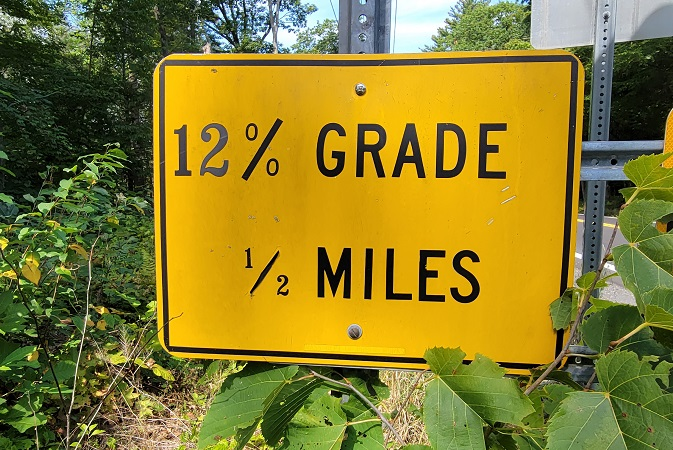 The sign of terror
In New Marlborough itself, I rode across a small section of gravel road, which was excellently isolated and quiet.
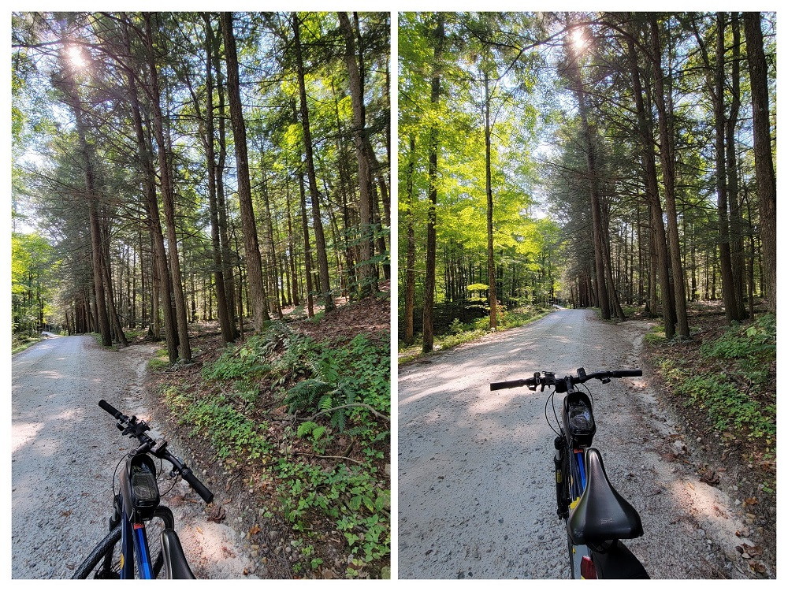 Isolated Gravel Road in New Marlborough
The last portion of this route after descending into Westfield through Agawam, West Springfield, and into Springfield, is a mess of stroads and terrifying vehicular mixing. I do consider myself a confident enough biker, but even for me, that portion was bad enough that I rode on the sidewalk.
Mount Washington is the south-westernmost town in Massachusetts. It is also one of the most isolated, with only one vehicle-grade route connecting it to the rest of the state. Just a week before this ride, I had gone on a hiking trip with my partner in that area - so although I did not bike in Mount Washington, I did do some strenous Strava-worthy activity, so I am counting it!
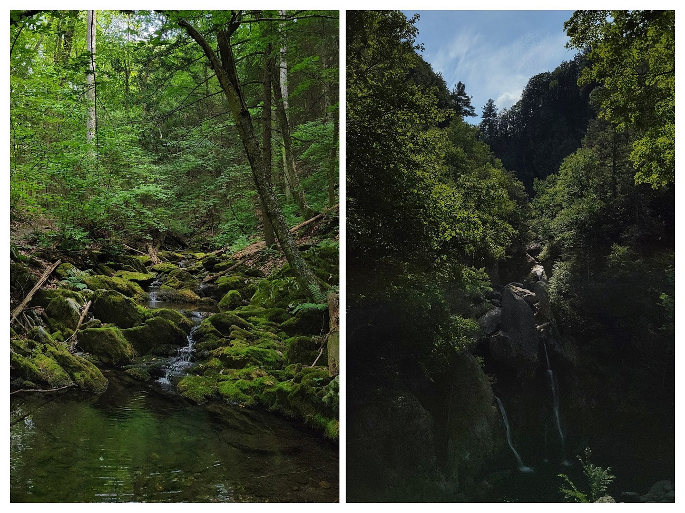 Hike to Bashbish Falls, and another one
Overall, I covered 15 new towns - Hancock, Sheffield, New Marlborough, Southwick, Egremont, Granville, Stockbridge, West Stockbridge, Sandisfield, Agawam, Alford, Tolland, Richmond and Great Barrington. A hike at Mt Washington is included bcz its insane to bike there - bringing the total to 207/351.
A Taconic Trot